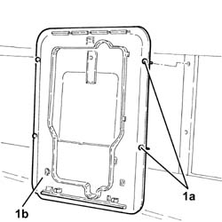
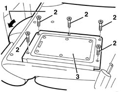

7050A78 ski flap in rear seat squab rr
- Path
- Procedures > 70 FITTINGS > 7050 REAR SEATS > 7050A rear seat assembly > 7050A78 ski flap in rear seat squab rr
- Kind
- repair procedure (removal / refitting; the operation number is the code)
- Applies to
- all engines; all production periods
- Interactive page
- https://sloeber94.github.io/elrnDB-a156/en/#/3238934
Applies to: all engines; all production periods; only with equipment: Sedan
 Removing
Removing
 Refitting
RefittingOpen the boot lid.
1. Release the retaining buttons (1a) and remove the ski holder flap (1b).

Applies to: all engines; all production periods; only with equipment: Sedan
Refitting
RemovingCheck that the ski holder flap is undamaged.
Place the ski holder flap in position and secure it using the retaining buttons.
Applies to: all engines; all production periods; only with equipment: Station Wagon
Removing
Refitting1. Lower the rear right seat squab.
2. Unscrew the bolts
3. Remove the ski holder flap.

Applies to: all engines; all production periods; only with equipment: Station Wagon
Refitting
RemovingCheck that the ski holder flap is undamaged.
Fit the ski holder flap in position and fix it with the bolts.
Raise the rear right seat squab.
Topics that link to this page (6)
- 7050A35 Backrest FRAME for (second row), side seat left or right - R.R.
- 7050A36 Backrest FAME for one centre (second row), seat left or right - R.R.
- 7050A43 ATTACHMENT/RELEASE DEVICE for one SPLIT rear seat BACKREST. -R.R.
- 7050A70 lh or rh device with cable (one) of one rear seat squab catch r r
- 7065B18 CENTRE REAR SEAT BELT - R.R.
- 7065B26 cable for attaching releasing rear central seat belt reel r r